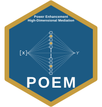
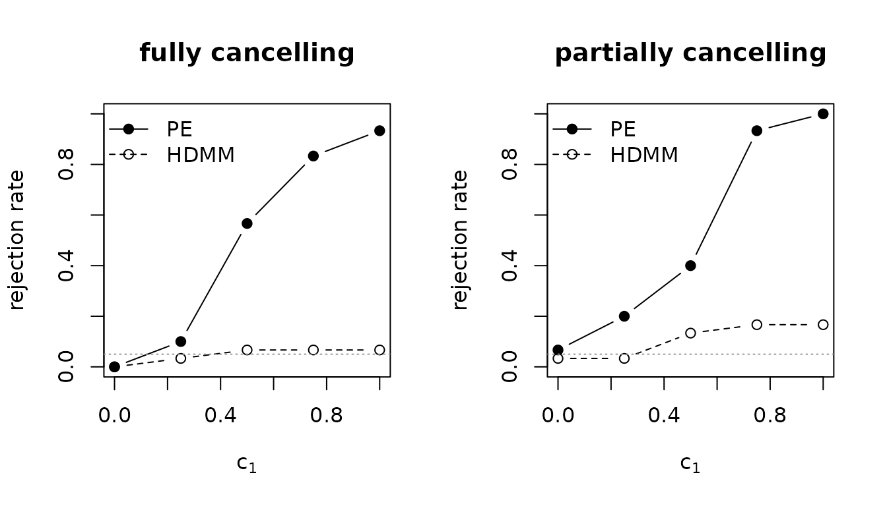
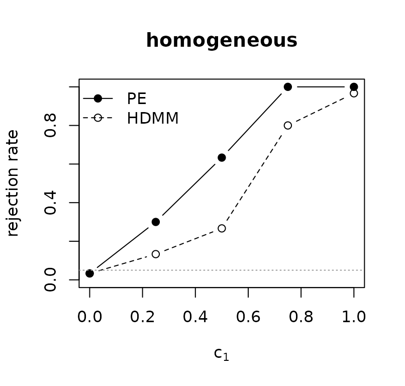

POEM and the Competition: A Head-to-Head
Source:vignettes/poem-vs-competitors.Rmd
poem-vs-competitors.RmdThe established test for whether any of many candidate mediators is active is the total-indirect-effect Wald test of Guo et al. (2022), which this package reports as HDMM. POEM’s power-enhanced test (PE) keeps that test intact and adds a component that reads the marginal signal from individual mediators. The two therefore agree by construction whenever the enhancement is zero, and differ only when it is not.
There is exactly one situation in which the two coincide: when the active mediators all push the outcome the same way, the enhancement adds nothing and both tests reject. That homogeneous case is the easy case, and it is not the one that motivates the method. The cases that do (mediators acting in different directions, which is the rule rather than the exception in real data) are where the benchmark loses power and the power-enhanced test does not. This vignette leads with those, then shows the homogeneous tie for completeness, and lets the output speak throughout. (Other comparators named in the manuscript, namely HILMA, GlobalTest, HDMT, and DACT, live in separate packages; the closing section shows how to fold them in if you have them installed.)
One data set, two verdicts
Consider two data sets with the same exposure, mediators, and sample size. In the first, the active mediators all push the outcome the same way (homogeneous). In the second, they push in opposite directions and exactly cancel, so the total indirect effect is zero even though four mediators are genuinely active (contrasting).
homo <- simulate_mediation_data(n = 200, p = 80, outcome = "continuous",
pattern = "homogeneous", c1 = 0.5)
cont <- simulate_mediation_data(n = 200, p = 80, outcome = "continuous",
pattern = "contrasting", c1 = 0.5)
verdict <- function(d) {
f <- pe_mediation(d$X, d$Y, d$M, outcome = "continuous")
c(HDMM = f$value[f$term == "pval_hdmm"], PE = f$value[f$term == "pval_pe"])
}
round(rbind(homogeneous = verdict(homo), contrasting = verdict(cont)), 4)
#> HDMM PE
#> homogeneous 0.0412 0
#> contrasting 0.3838 0When the mediators agree in sign, both tests reject: there is nothing to enhance, and they give the same answer. When the mediators cancel, the benchmark sees a zero total indirect effect and returns a large p-value, while the power-enhanced test still detects the four active mediators. Both data sets contain real mediation; only one test sees it in both.
Size: neither test trades error for power
A fair comparison starts at the null. With no active mediator
(c1 = 0) a test should reject about 5% of the time. The
enhancement is designed to vanish under the null, so PE inherits the
benchmark’s size rather than buying power with inflated error:
size <- pe_power_curve(n = 150, p = 50, outcome = "continuous",
pattern = "contrasting", c1_grid = 0, n_rep = 60)
size[, c("rejection_hdmm", "rejection_pe")]
#> rejection_hdmm rejection_pe
#> 0.01667 0.05Both sit near the nominal 0.05. Whatever PE gains later, it does not come from a looser null.
Power where it counts: heterogeneous mediation
A signal-strength sweep makes the gap visible. The shared helper below draws the benchmark and the power-enhanced rejection rates on one plot.
draw <- function(pc, main) {
plot(pc$c1, pc$rejection_pe, type = "b", pch = 19, ylim = c(0, 1),
xlab = expression(c[1]), ylab = "rejection rate", main = main)
lines(pc$c1, pc$rejection_hdmm, type = "b", pch = 1, lty = 2)
abline(h = 0.05, col = "grey60", lty = 3)
legend("topleft", c("PE", "HDMM"), pch = c(19, 1), lty = c(1, 2), bty = "n")
}
grid <- c(0, 0.25, 0.5, 0.75, 1)Two heterogeneous settings, both realistic. On the left, the active mediators fully cancel (the total indirect effect is exactly zero). On the right, six mediators of mixed sign only partially cancel, leaving a small nonzero total indirect effect, the kind of messy signal real data actually presents. In both the benchmark is at or near its size while the power-enhanced test climbs toward one.
p <- 50
# Mixed-sign mediators that only partially cancel: a small but nonzero total
# indirect effect, where the benchmark is weak and the enhancement is not.
alpha_mix <- c(1, -0.9, 0.8, -0.7, 0.6, -0.5, rep(0, p - 6))
tau_mix <- c(rep(0.3, 6), rep(0, p - 6))
pc_cancel <- pe_power_curve(n = 150, p = p, outcome = "continuous",
pattern = "contrasting", c1_grid = grid, n_rep = 30)
pc_mixed <- pe_power_curve(n = 150, p = p, outcome = "continuous",
c1_grid = grid, n_rep = 30,
outcome_args = list(alpha_m = alpha_mix, tau = tau_mix))
op <- par(mfrow = c(1, 2))
draw(pc_cancel, "fully cancelling")
draw(pc_mixed, "partially cancelling")
par(op)The benchmark is built on the total indirect effect; when that quantity is small or zero despite active mediators, it has little to detect. The power-enhanced test reads the individual mediators directly, so it keeps its power across both settings.
The one case where they tie: homogeneous mediation
For completeness, the easy case. When every active mediator pushes the same way, the total indirect effect is large, the benchmark is already powerful, and the enhancement adds only a modest margin:
pc_homo <- pe_power_curve(n = 150, p = p, outcome = "continuous",
pattern = "homogeneous", c1_grid = grid, n_rep = 30)
draw(pc_homo, "homogeneous")
This is the honest boundary of the claim: POEM does not beat the benchmark everywhere. It matches it where the benchmark is already strong, and pulls away where the benchmark is weak.
The pattern holds for binary and count outcomes
The enhancement is not particular to continuous outcomes. Here is the
rejection rate at a fixed contrasting signal (c1 = 1) for
all three outcome models; the benchmark stays near its size while PE is
far above it:
at_c1 <- function(outcome, c2) {
pc <- pe_power_curve(n = 180, p = 50, outcome = outcome,
pattern = "contrasting", c1_grid = 1, c2 = c2,
n_rep = 20)
c(HDMM = pc$rejection_hdmm, PE = pc$rejection_pe)
}
round(rbind(continuous = at_c1("continuous", 0.5),
binary = at_c1("binary", 1),
count = at_c1("count", 0.4)), 3)
#> HDMM PE
#> continuous 0.05 1.0
#> binary 0.15 0.7
#> count 0.00 1.0Beyond a yes/no: which mediators?
The benchmark answers one global question. The power-enhanced screen also returns which mediators are active, and how reliably. Over repeated contrasting data sets, it recovers the active set with high precision and moderate recall, while keeping false positives rare:
pe_identification_study(n = 150, p = 60, outcome = "continuous",
pattern = "contrasting", c1_grid = c(0, 1),
n_rep = 30, methods = "Bonferroni")
#> c1 method fwer fdr precision recall n_valid
#> 0 Bonferroni 0.06667 0.06667 0 <NA> 30
#> 1 Bonferroni 0.06667 0.01778 0.981 0.475 30
#>
#> Outcome model: continuousAt the null (c1 = 0) the family-wise error rate stays
small and recall is undefined (there is nothing to recover); at
c1 = 1 precision is high. The benchmark offers no
comparable list, because a total-indirect-effect test of zero points to
no mediator at all.
On real data
The contrast is not only a simulation artifact. On the shipped WHO
health-expenditure data, summary() reports, group by group,
where the power-enhanced test finds mediation the benchmark does
not:
imr <- WHO_mediation_analysis("imr", groupings = c("global", "region", "income"),
lambda_grid = seq(0.1, 5, length.out = 100))
summary(imr)
#> POEM comparison: IMR
#> groups: 11 (10 with data), alpha = 0.05
#> detected by benchmark (HDMM): 4 by power-enhanced (PE): 7
#> PE detects mediation in 3 groups the benchmark misses:
#> group n_countries pval_hdmm pval_pe active_mediators
#> SEAR 5 0.309 4.13e-41 ext_usd2021_pc
#> WPR 9 0.872 3.77e-83 chi_che, pvtd_gdp
#> Low 16 0.316 2.10e-62 pvtd_usd2021
#> most-flagged mediators:
#> gge_gdp 2
#> chi_che 1
#> ext_usd2021_pc 1
#> oops_che 1
#> pvtd_gdp 1
#> pvtd_usd2021 1
#> shi_che 1In several regions and income groups the benchmark p-value is large (in the Western Pacific it is near one), yet the power-enhanced test detects a specific health-expenditure indicator. These are the cases where mediators act heterogeneously and the conventional test is blind.
(The small region-by-income cells contain indicators that are
constant within the cell. WHO_mediation_analysis() drops
those automatically; when calling pe_mediation() on such a
subset yourself, pass drop_constant = TRUE to do the
same.)
A balanced scorecard
| Situation | HDMM (benchmark) | PE (POEM) |
|---|---|---|
| Null (no mediation) | correct ~5% size | correct ~5% size |
| Homogeneous mediation | powerful | powerful (matches) |
| Heterogeneous: fully cancelling | no power | recovers the signal |
| Heterogeneous: partially cancelling | weak | recovers the signal |
| Which mediators are active | not provided | identified, with FWER/FDR control |
| Real-data subgroups | misses several | finds them |
PE never does worse on size, matches the benchmark where the benchmark is already strong, and supplies power where the benchmark has none. That is the whole of the claim, and the rows above are the evidence for it.
Folding in other comparators
The manuscript also benchmarks against HILMA (Zhou et al. 2020), GlobalTest (Djordjilovic et al. 2019), and, for individual-mediator identification, HDMT (Dai et al. 2022) and DACT (Liu et al. 2022). Those methods live in their own packages, which POEM does not depend on. If you have them installed, they slot directly alongside a POEM fit on the same simulated data. For example:
d <- simulate_mediation_data(n = 300, p = 500, outcome = "continuous",
pattern = "contrasting", c1 = 0.5)
pe <- pe_mediation(d$X, d$Y, d$M, outcome = "continuous")
# HILMA (package 'freebird'): a debiased-lasso total-mediation-effect test.
hilma_p <- freebird::hilma(d$Y, d$M, d$X)$pvalue
# GlobalTest (Bioconductor package 'globaltest'): a score test of the
# mediator block against the outcome.
gt_p <- globaltest::p.value(globaltest::gt(d$Y, d$M))
data.frame(method = c("HDMM", "PE-HDMM", "HILMA", "GlobalTest"),
pval = c(pe$value[pe$term == "pval_hdmm"],
pe$value[pe$term == "pval_pe"], hilma_p, gt_p))Run on contrasting data, the total-indirect-effect methods (HDMM, HILMA) behave alike, because they are built on the quantity that cancels, while the power-enhanced test detects the active mediators, the comparison the manuscript’s figures report in full.
References
Yu, X., and Kelley, K. (in press). Power Enhancement in High-Dimensional Heterogeneous Mediation Analysis. Journal of the American Statistical Association.
Guo, X., Li, R., Liu, J., & Zeng, M. (2022). High-dimensional mediation analysis for selecting DNA methylation loci mediating childhood trauma and cortisol stress reactivity. Journal of the American Statistical Association, 117(539), 1110–1121.